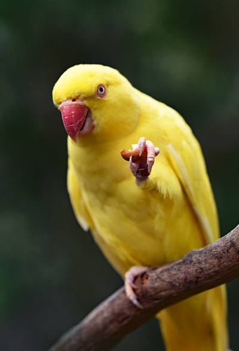

aaaa
バンコクのノマドエンジニア
お問い合わせ/資料請求
資料請求
プログラミングで
人生の安定を手にいれよう
バンコクのノマドエンジニア育成講座
iSara[イサラ]
まずは２０日間で、
月１０万円稼げるスキルを手にいれよう。
※受講料金は実質０円です。詳しくは資料請求をどうぞ。
お問い合わせ＆資料請求はこちら
第６期生：
2019年11月25日 ~ 2019年12月14日
＊締め切りました
第６期生：
2019年11月25日 ~ 2019年12月14日
＊締め切りました
第６期生：
2019年11月25日 ~ 2019年12月14日
＊締め切りました
ツイート
いいね！
シェア
エンジニアとして本当の自由を手に入れるためには？
エンジニア需要の高まりに伴い、プログラミングスクールが増えています。
しかしそこでの学習の先は、 提携して決められた就職先に就職すること。
これで本当にいいのですか？
日本人エンジニアはアメリカと較べて給料が格段に低い。
その理由がここにあり、 エンジニアは自分の給料をコントロールすべきなのです。
スキルを身につけたエンジニアは、人生をコントロールすることでより自由に。
そこで必要なのが
「稼ぐ力」
です。
エンジニアとして
本当の自由を手に入れるためには？
エンジニア需要の高まりに伴い、
プログラミングスクールが増えています。
しかしそこでの学習の先は、
提携して決められた就職先に就職すること。
これで本当にいいのですか？
日本人エンジニアはアメリカと較べて
給料が格段に低い。
その理由がここにあり、
エンジニアは自分の給料を
コントロールすべきなのです。
スキルを身につけたエンジニアは、
人生をコントロールすることでより自由に。
そこで必要なのが
「稼ぐ力」
です。
ノマドエンジニア育成講座
iSara[イサラ]とは
「 稼ぐこと 」にフォーカスした
Webエンジニア育成講座です。
稼げるエンジニアに必要な５つのスキルとは？
基礎的な
プログラミングスキル
基礎的なプログラミングスキル
案件獲得に必要な営業力
見積もり作成から
納品までの知識
自分の付加価値を
高めるスキル
iSaraで「基本的なプログラミングスキル」は教えません
基礎的なプログラミングスキルは
無料で学べる時代。
iSaraでは、基礎知識学習は
事前課題とチャットサポートのみ。
STEP.1
【バンコク渡航前１ヶ月】
事前課題で基礎知識を学ぶ
STEP.1
【バンコク渡航前１ヶ月】
事前課題で基礎知識を学ぶ
STEP.1
【バンコク渡航前１ヶ月】
事前課題で基礎知識を学ぶ
スキルアップしても
フリーランスエンジニアとして食べていくことは難しい。
フリーランスには
プログラミングスキル以外
が大切。
iSara[イサラ]で学べること
iSaraの学習では、エンジニアとして
「稼ぐ」ために必要な能力を身につけます。
これらを教えるのがiSaraです。
他のプログラミングスクールと
ここが違う！
iSara[イサラ]の３つのメリット
現役フリーランスから学べる
他のプログラミングスクールとは違い、
実際にフリーランスとして活動している
エンジニアが直接講師を勤めます。
実践を通じて学べる
フリーランスにとって最短の学習方法は「実践」。
iSaraでは実案件を通して学びます。
現役フリーランサーの案件サポートに加え、
クラウドソーシングを活用。
初心者の自分じゃ無理と思うかもですが、
現役フリーランスがサポートしますので大丈夫。
現役フリーランスから学べる
他のプログラミングスクールとは違い、
実際にフリーランスとして活動している
エンジニアが直接講師を勤めます。
さらに！帰国後もサポート付き
リモートワーカーのチームを作ることで受注率、
受注単価が大幅に向上します。
iSaraは講座が終わって終了ではありません。
参加メンバーのチャットグループを作り、
帰国後も継続的に案件参加できるようになります。
また、チームで働くことで
継続的に稼ぎやすい
仕組みづくりも構築しております。
事前課題ができない人はお断りしております。
iSaraでは、無料で学べる
プログラミング基礎知識は教えません。
事前課題一覧はメールで送りつつ、
チャットサポートのみ。
従って、本気で取り組まないと結果は出ません。
創業メンバー
実際にフリーランスとして活躍しているエンジニアが立ち上げました
フリーランス講師
〇〇〇〇
〇〇の代表です。
学生起業の後にリクルートへ就職、
その後独立し、海外移住しました。
今はフリーランスとして
リモートワークで日本円を稼ぎ、
外国通貨に変えて使い、海外を旅してます。
営業、ブログPVアップ(最高月間〇〇万PV)、
ビジネス構築が専門です。
フリーランス講師
〇〇〇〇
バンコクのシェアハウスのオーナーを
やりながら
一年の大半を
タイで過ごしています。
大学時代から今に至るまで
ネットだけで生計を立てているので、
自由歴だけは講師陣の中で最長です！
母親がタイ人という事もあり
タイには精通してますので、
こちらでの生活のサポートは
お任せください！
フリーランス講師
〇〇〇〇
月の半分は東京の会社に
リモートで勤めつつ、
フリーでも
活動しているエンジニアです。
Laravel・WordPressでの
Web制作がコアスキル。
立ち上げメンバーとして
カリキュラム原案制作に参画し、
現在は外部アドバイザーをしています！

フリーランス講師
〇〇〇〇
アドバイザーとして参画しました。
新卒で海外就職して１１ヶ月後に退職。
今は日本にいたり海外にいたりで
ゆるくフリーランスをしています。
お仕事はWebマーケティングと
プログラミングが専門領域です。
Q&A
ノマドエンジニアとして自由に稼ぐことは
「 本当に 」可能なのか？
実現可能です
その証拠に第三者の声を聞いてみました。
＊実際にフリーランスエンジニアを採用する企業様から、メッセージをいただきました。
リモートワークという言葉がありますが、弊社では何も気にしません。エンジニアに求めるのは、快適なコミュニケーションと信頼と成果物のみ。
○○○○ 代表取締役 ○○ ○○
プログラマーが足りていないときに外部リソースとして、フリーランスに発注しています。今はどこの会社でもエンジニアが不足していますね。
○○○○ 代表取締役 ○○ ○○
社内でスキルのある人材を採用するのは難しい。外部パートナーとして継続的に依頼できるフリーランスには助かっています。
○○○○ 代表取締役 ○○ ○○
iSara[イサラ]で学べる内容
渡航前の事前課題と渡航中に学べることの一覧です。
渡航前の事前学習
０から始めるプログラミング事前学習講座
参加者グループコミュニティ
チャットサポート
事前スカイプコンサル
jQueryの事前学習講座
Bootstrapの事前講座
PHP / Mysqlの事前学習講座
稼ぐためのHTML/CSS講座
WordPressの事前学習講座
渡航前の事前学習
０から始めるプログラミング事前学習講座
参加者グループコミュニティ
チャットサポート
事前スカイプコンサル
jQueryの事前学習講座
Bootstrapの事前講座
PHP / Mysqlの事前学習講座
稼ぐためのHTML/CSS講座
WordPressの事前学習講座
講座費用258,000円以上の金額が稼げるまで「永久サポート延長」します。
つまりリスク０で参加できます。
受講の流れ
現役フリーランスのサポートつき
Skypeで事前コンサル
現在のスキルの状況、パソコンの環境説明、渡航での注意点を話します。簡単なテストあり
iSaraでは受講料を稼げることを保障しています。従って、事前コンサル時点で簡単なテストを実施し、場合によってはお断りをしております。（テストの内容はPCの基礎知識に関するテストですので、普段からパソコンを利用する方でしたら問題ありません。テストはもちろん無料ですので、まずはお問い合わせください。）
Skypeで事前コンサル
現在のスキルの状況、パソコンの環境説明、渡航での注意点を話します。簡単なテストあり
iSaraでは受講料を稼げることを保障しています。従って、事前コンサル時点で簡単なテストを実施し、場合によってはお断りをしております。（テストの内容はPCの基礎知識に関するテストですので、普段からパソコンを利用する方でしたら問題ありません。テストはもちろん無料ですので、まずはお問い合わせください。）
Skypeで事前コンサル
現在のスキルの状況、パソコンの環境説明、渡航での注意点を話します。簡単なテストあり
iSaraでは受講料を稼げることを保障しています。従って、事前コンサル時点で簡単なテストを実施し、場合によってはお断りをしております。（テストの内容はPCの基礎知識に関するテストですので、普段からパソコンを利用する方でしたら問題ありません。テストはもちろん無料ですので、まずはお問い合わせください。）
Skypeで事前コンサル
現在のスキルの状況、パソコンの環境説明、渡航での注意点を話します。簡単なテストあり
iSaraでは受講料を稼げることを保障しています。従って、事前コンサル時点で簡単なテストを実施し、場合によってはお断りをしております。（テストの内容はPCの基礎知識に関するテストですので、普段からパソコンを利用する方でしたら問題ありません。テストはもちろん無料ですので、まずはお問い合わせください。）
Skypeで事前コンサル
現在のスキルの状況、パソコンの環境説明、渡航での注意点を話します。簡単なテストあり
iSaraでは受講料を稼げることを保障しています。従って、事前コンサル時点で簡単なテストを実施し、場合によってはお断りをしております。（テストの内容はPCの基礎知識に関するテストですので、普段からパソコンを利用する方でしたら問題ありません。テストはもちろん無料ですので、まずはお問い合わせください。）